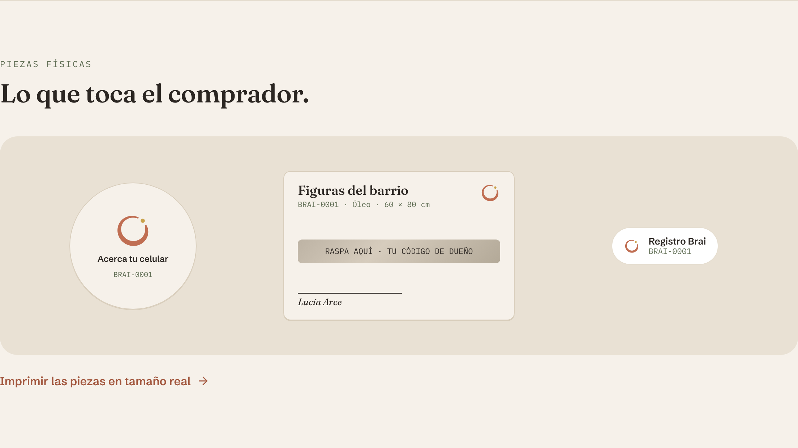
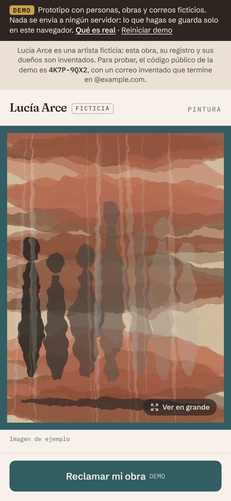
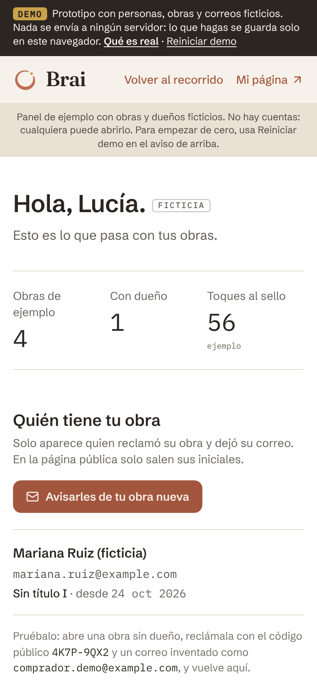
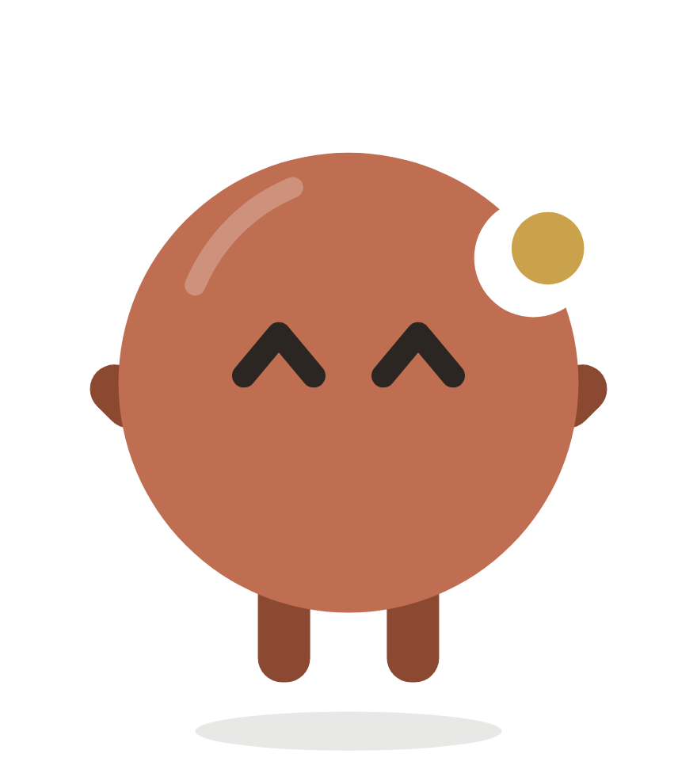

Propuesta final · 26 de noviembre de 2026
Brai ayuda a artistas que venden directo a registrar la procedencia de cada obra y, cuando el comprador la reclama, mantener el contacto para futuras obras.
La vendió en su taller o por Instagram y ahí se acabó el rastro.
Su mejor cliente es quien ya le compró, pero cada obra nueva empieza de cero.
Si la obra se revende o se hereda, su historia se pierde.
Es una hipótesis. La estamos probando con entrevistas a artistas y compradores (lámina 12).
de los coleccionistas compró directo a un artista. Es el 19% de lo que gastan, el segundo canal después de las galerías.
Cómo compraron directo
Art Basel y UBS, Survey of Global Collecting 2026: 3,100 coleccionistas de alto patrimonio en 10 países. México no está incluido; sirve como tendencia. En Jalisco trabajan 8,870 artistas visuales (DataMéxico, ENOE 2025).

El sello NFC va detrás del cuadro con un QR al lado. La tarjeta, firmada a mano por el artista, esconde el código de dueño bajo una raspadita.
Fotos, tres fotos de detalles únicos, ficha e historia, en su taller, con nosotros.
Sello detrás y QR al lado. Sin descargar ninguna app.
La tarjeta firmada va con la obra. El comprador raspa su código.
Si escribe el código y su correo, el artista sabe quién la tiene.


Escanea y recorre la demo en 5 minutos.
Personas y obras ficticias. Nada se envía a ningún servidor.

| Precio | En persona | En español | El comprador se registra solo | |
|---|---|---|---|---|
| markmy.art | Gratis | No | Sí | No lo describe |
| Verisart | 0 a 99.99 USD al mes | No | No | Transferencias |
| Artwork Archive | 8 a 24 USD al mes | No | No | No, el artista captura |
| Tagsmart | 20 a 120 libras por obra | Servicio | No | ? |
| Brai | En prueba | Sí | Sí | Sí, al reclamar |
Precios consultados el 5 nov 2026 (docs/COMPETENCIA.md y docs/MERCADO.md).
MXN por obra con NTAG213: sello, raspadita, etiqueta VOID, tarjeta y QR.
MXN por obra con NTAG 424 DNA, el sello que genera una firma nueva en cada toque, con impuesto de importación.
MXN al mes de costos fijos si se opera de verdad (Vercel Pro, Supabase Pro, dominio). Prototipo: ~49 MXN al año.
docs/COSTOS.md, precios en línea del 5 nov 2026. Por confirmar: el impuesto de importación del 424 DNA y una imprenta en Guadalajara.
Costo para un artista que vende 10 obras de 12,000 MXN al año, como % de sus ventas
Opción A: 7,500 MXN de arranque y 990 al mes (publicada, sin validar). Opción B: 2,500 de arranque con 5 obras y 450 por obra adicional (en prueba). Galería: comisión típica de la industria.
| Opción A | Opción B | |
|---|---|---|
| Ingreso por artista, año 1 | 19,380 MXN | 4,750 MXN |
| Horas del equipo por artista | ~13 h | ~13 h |
| Margen por hora | ~1,483 MXN | ~358 MXN |
| Artistas para cubrir el costo fijo | 1 | ~4 |
| Fácil de vender | Difícil: 16% de sus ventas | Más fácil: 4% |
Cálculo con docs/COSTOS.md. Supuestos: 10 obras al año, 8 h por arranque y 1 h por obra adicional, hora del equipo a 100 MXN, costo fijo comercial 10,550 MXN al año. Detalle: docs/PERSPECTIVAS.md.
| Pregunta | Respuesta |
|---|---|
| Artistas entrevistados | PENDIENTE ? de 3 |
| Compradores entrevistados | PENDIENTE ? de 5 |
| ¿Sabe quién tiene sus obras? | ? |
| ¿Le han vuelto a comprar? | ? |
| ¿Opción A, B o ninguna? | ? |
| ¿El comprador dejaría su correo? | ? |
Esta lámina se llena con frases textuales de las entrevistas (docs/CLIENTES.md). No se presenta con datos inventados.
Siguiente paso
Piloto con hasta 3 artistas fundadores antes de la Expo del 16 de febrero, con permiso por escrito y un adulto presente. Lo que digan decide el precio.
Equipo: PENDIENTE nombres y roles (docs/CONCURSO.md).